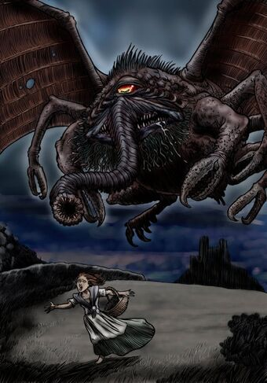

Зловещие проклятые книги утверждают, что змеебородый Бъятис при был с Великими Древними с неведомых звезд. Являясь богом забвения, он может быть призван через свой идол, принесенный на нашу планету расой Глубоководных. При условии, что живое существо прикоснется его образу!
Страшный лик Бьятиса способен смутить всякого любопытного. Он - подлинный ночной кошмар, имеющий сходства с пауком и крабом. Всего с одним глазом, словно циклоп, и конечностями ракообразного. С его жуткого лица свисают щупальца, напоминающие то ли слоновьи хоботы ,то ли змей. За это Бьятис и получил прозвище змеебородого. А когда он втягивает хоботок с глазом — то, как утверждают сказания, имеет сходство и с жабой.
Его взгляд погружает разум во мрак, а отнимая жизненные силы жертв, Бьятис растет и крепнет. Согласно легендам, Бьятис был выпущен из заточения римлянами в Британии. Обладая гипнотической силой, Древний воспользовался беспомощностью своих невольных освободителей, и из- бежал вековечного пленения, в котором находился задолго до римского вторжения на остров.
Впервые Бьятис упоминается в рассказе, «Звездный бродяга» (The Shambler from the Stars, 1935 ) Роберта Блоха. Подробно описывается в рассказе Рэмси Кэмбелла «Комната в замке» (The Room in the Castle, 1964).
